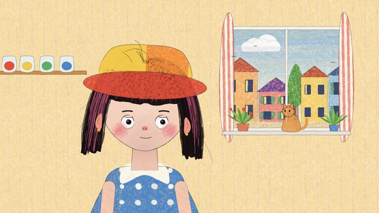
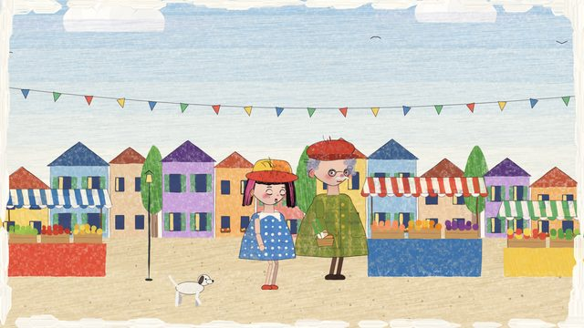
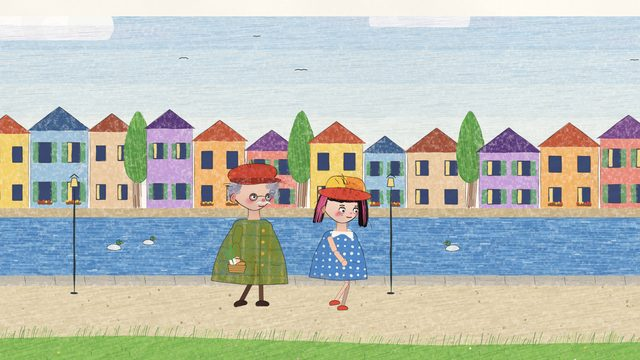
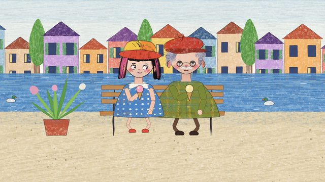
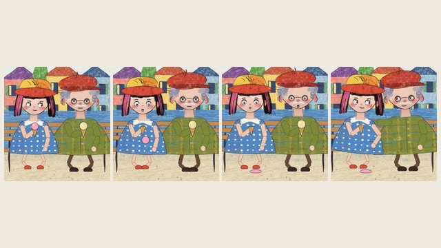
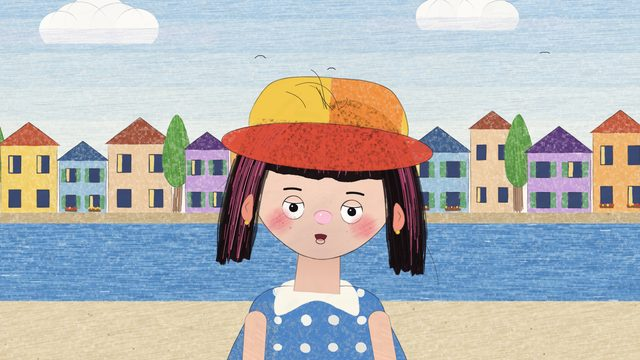
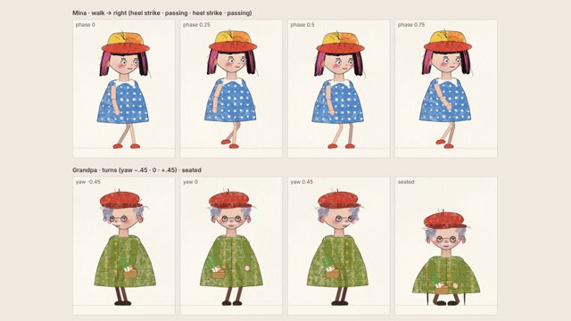

작업 흐름
- 입력
- 주제 한 줄(예: 할아버지랑 장 보러 가는 날, 바람 부는 날의 산책)
- 브리프
- 한 줄 줄거리와 작은 반전, 인물(머리 · 모자 · 코트 무늬 · 들고 다니는 소품 · 무게), 장면표(구도 · 장소 · 카메라 · 전환), 걷기 · 시선 · 큰 동작의 모으기 → 동작 → 회복, 음악 · 주변 소리 · 효과음
- 만들기
- 캐스트 시트(좌우 회전 · 앉기 · 좌우 걷기)를 먼저 채점한 뒤 장소를 깊이별 판으로 칠하고, 장면마다 카메라 · 인물 자세 · 동물 · 소리를 씀
- 확인
- 결정성, 장면마다 살아 있음, 잉크 · 평평한 면 없음 · 팔레트, 무릎 방향 · 발 닿음 · 디딘 발 고정 · 팔꿈치 · 보는 방향 = 걷는 방향, 큰 동작의 모으기와 회복, 소리(NaN · 클리핑 · 무음 없음, 발소리 = 발뒤꿈치 닿는 순간), 채점 기준 10개
- 출력
- 소리가 있는 1920×1080 MP4(30 fps), 클릭하면 소리가 나는 라이브 페이지, 스틸, 콘택트 시트, 캐스트 시트
node storybook-short/scripts/new-film.mjs my-film
node storybook-short/scripts/render.mjs my-film/index.html --cast
node storybook-short/scripts/check.mjs my-film/index.html
node storybook-short/scripts/render.mjs my-film/index.html --sheet 16 --scale .5
node storybook-short/scripts/render.mjs my-film/index.html요구 사항: Node 18+와 Playwright Chromium, ffmpeg. 네트워크 · npm 설치 · GPU가 필요 없습니다(42초 예제의 960×540 미리보기가 약 1분, 검사 전체가 몇 초). 단계별 순서는 SKILL.md에 있습니다.
샘플
원본 영화에 없는 주제 두 개를 브리프부터 새로 만든 영화의 장면입니다. 카드를 누르면 새 탭에서 그 영화의 라이브 페이지나 캐스트 시트가 열립니다. 브라우저가 같은 코드로 그리고 소리를 냅니다.
장 보는 날 예제 · 장면 5개 · 42초 · 인물 2명
여름 토요일, 미나는 할아버지와 장터에 갔다가 운하를 따라 걸어 돌아오고, 벤치에서 아이스크림을 떨어뜨립니다. 그러자 할아버지가 자기 아이스크림을 내밉니다. 미나(가벼운 몸, 분홍 줄이 섞인 단발, 버킷햇, 물방울 원피스)와 할아버지(무거운 몸, 베레모, 동그란 안경, 흰 콧수염, 체크 카디건, 바구니)는 클로즈업과 전경에서 같은 설계를 씁니다. 운하 산책은 두 사람이 서로 다른 보폭과 속도로 걷고, 발소리는 각자의 발뒤꿈치에 맞춥니다.







바람 부는 날 시작 그림 · 장면 2개 · 16초
new-film.mjs가 복사하는 시작 그림입니다. 바람 부는 언덕에서 갈매기를 올려다보던 로완이 개와 함께 능선 길을 따라 집으로 걸어갑니다. 원본 영화의 장면(바닷가 절벽, 광장, 가을 공원, 트램)과 겹치지 않게 고른 주제입니다.
실제 작품
이 레포에서 만든 스킬입니다. Chetaslua(@chetaslua)가 X에 올린 52초짜리 "순수 코드로 만든 손그림 영화"가 출발점입니다. 이미지 · 라이브러리 · 에셋 없이 프레임은 캔버스 코드, 소리는 Web Audio 코드로 만들었고, storybook-portrait의 출처인 참고 그림과 같은 그림책 화풍입니다. 이 스킬은 그 방법과 형식(작은 하루를 몇 장면으로, 펼침면 같은 장소, 컷아웃 인물, 장면마다 살아 있는 것, 합성한 소리)을 가져와 어떤 주제든 영화로 만들 수 있게 했습니다. 원본 영화의 장면과 인물(퍼핀을 모자에 얹은 소녀, 등대 절벽, 광장, 가을 공원, 트램)은 쓰지 않았고, 시작 그림과 예제는 모두 이 레포의 것입니다. 그림체의 원작자는 @Artedeingenio입니다.
링크
- SKILL.md 워크플로
- 폴더 lib · scripts · references · templates · examples
- README.md 빠른 시작
- references/BRIEF.md 브리프 틀과 채점 기준
- references/LOOK.md 장소 · 인물 · 살아 있는 것의 그림체
- references/CAST.md 인물 설계, 자세 함수, 관절 규칙, 캐스트 시트
- references/FILM.md 장면 · 판 · 카메라 · 키트 · 페이지 계약
- references/MOTION.md AI 티 없애기: 무게 · 관성 · 예비 동작 · 디딘 발
- references/SOUND.md Web Audio 음악 · 주변 소리 · 효과음 · 발소리
- references/SOURCE.md 원본 게시물, 가져온 것과 가져오지 않은 것
- references/LESSONS.md 겪은 문제와 해결